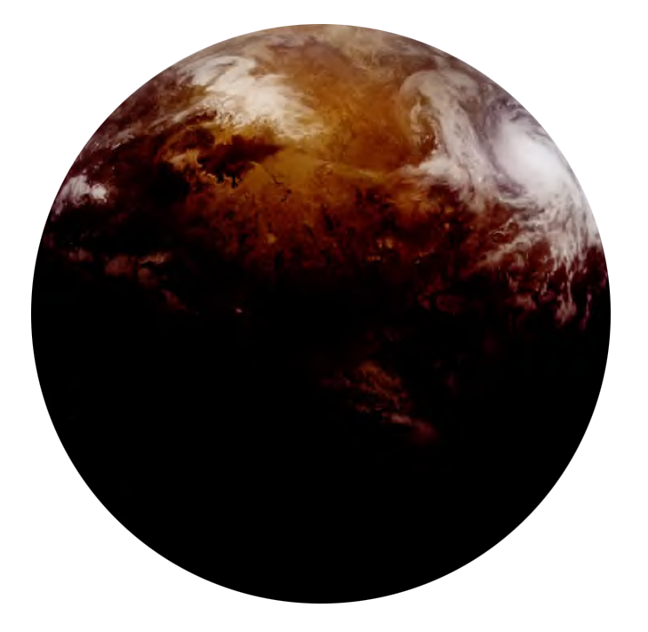

Dorin
dorin
Population: 671,974,000

Terrain: Mountains, Valleys, Plateaus
Orbital Metrics: 409 days per year / 22 hours per day
Languages: Kel Dor, Basic
Major Cities: Dor’shan, Dor’galk
Areas of Interest: Imperial Customs Post
Major Exports: Raw Materials
Major Imports: Technology
Astronavigation Data
Trade Routes: Celanon Spur, Namadii Corridor
Dorin lies at a critical hyperspace chokepoint between the New Territories of the galactic North and the Core Worlds. Imperial Customs has a strong presence at the edge of the system in order to tax hyperspace traffic changing course at Dorin, but it usually ignores intrasystem traffic. However, despite Dorin’s lucrative location, few spacers make landfall on the planet.
Two hazardously proximal black holes dim the already-faint light of Dorin’s orange star; and most species find it a dark, depressing place. The atmosphere has such little oxygen that most species have to wear breathers. Vicious storms plague Dorin year round. Kel Dor architecture consists of squat domes and ziggurats built to withstand Dorin’s powerful winds. Most homes and buildings need underground shelters in the event of a mega-storm. These conditions have limited Dorin’s potential as.a trade hub but have also afforded it limited autonomy.
Imperial Moff Sticrie is ostensibly in charge, but he governs the sector from Myomar and avoids Kel Dor politics unless there is an interruption in tax collection. While the locals are generous, their commitment to justice is absolute. Dorin’s natives deny Sticrie the customary bribes, privileges, and diplomatic immunity Imperial officials receive elsewhere. Convictions are difficult to get in Kel Dor courts, but once the court reaches a verdict, there are few chances for appeals or reprieves. Justice comes within days, and the punishments.are typically more severe than a simple fine or prison sentence.
Outsiders often compare Kel Dor cities to the backs of bony hutta toads, with their evenly spaced grid of mismatched horns and bumps. Though the cities are thought of as ugly from above, most spacers change their minds after a trip through town. Almost every building is awash with animated lights in soothing colors designed to cut through the murky atmosphere and attract clientele. An emergency program can override the lighting protocols to direct everyone to safety in the event of a storm.
The Baron Do Sages
An ancient order of seers that grew out of a necessity to predict lethal storms, the Baran Do helped govern Dorin until its discovery by the Republic. Eventually, the sages faded to the background of Dorin society. The marginalization of the Baran Do is the only reason they escaped destruction during Order 66.
Those offered a permanent home with the Baran Do learn to use the Force through the lens of the natural elements. The Sages organize their Force techniques into three categories: the Hassat-Birr, Hassat-Durr, and Hassat-Worl, or the guided wind, lightning, and stream. The Sages are not militant, though many train in the martial arts. The quarterstaff is popular among the Baran Do, as the walking stick is a common sight in the face of Dorin’s strong winds.